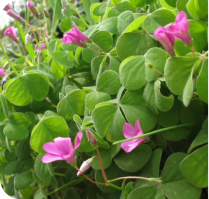
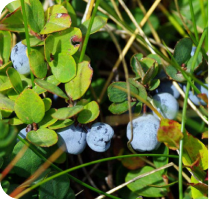
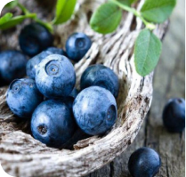

Результаты поиска по запросу "кактус"

Колокольчики
Колоко́льчик — род исключительно травянистых растений из семейства Колокольчиковые. Род включает более 400 видов, произрастающих в странах с умеренным климатом.

Монстера
Монстера — вечнозелёная лиана с крупными — до 45 см — резными листьями. Монстеры неприхотливы и даже в домашних условиях могут вырастать до нескольких метров в длину. Чтобы вырастить крупное растение, потребуется устойчивая опора.

Лилии
Лилии - род растений семейства Лилейные (Liliaceae). Многолетние травы, снабжённые луковицами, состоящими из мясистых низовых листьев, расположенных черепитчато, белого, розоватого или желтоватого цвета.

Кислица
Кислица – травянистое растение из семейства Кисличные. Научное название – оксалис, он также он известен под названиями ложный клевер, заячья капуста и кисличка. И действительно, листочки по строению похожи на клевер и имеют кисловатый привкус

голубика
Голубика – плодовый кустарник из рода Вакциниум, семейства Вересковые. В народе растение также известно под именами гонобоб, водопьянка, голубец, дурница, синий виноград, синика. Растет оно в Северном полушарии, от умеренного пояса до Тундры.

Черника
Черника – плодовое растение из рода Вакциниум в семействе Вересковые. Кроме очень полезных и вкусных ягод оно ценится декоративностью, поэтому кустики часто высаживают на альпийских горках. Побеги и листву кустарников также используют на корм скоту.